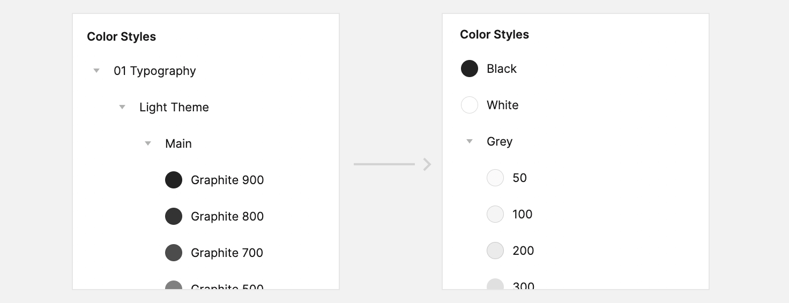
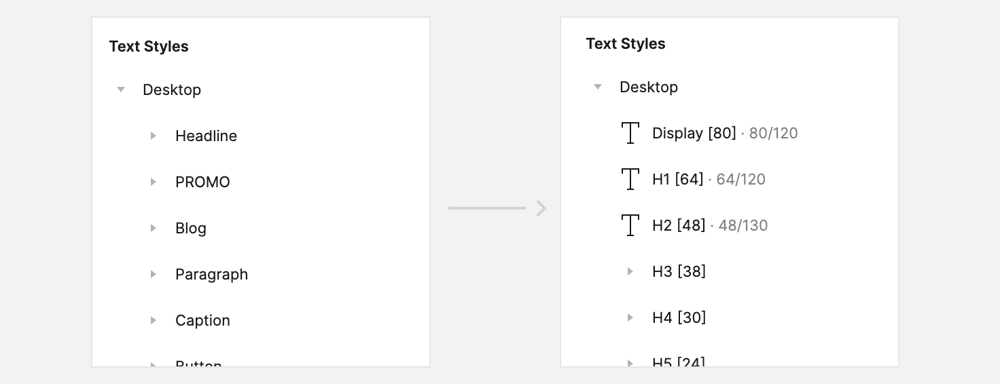
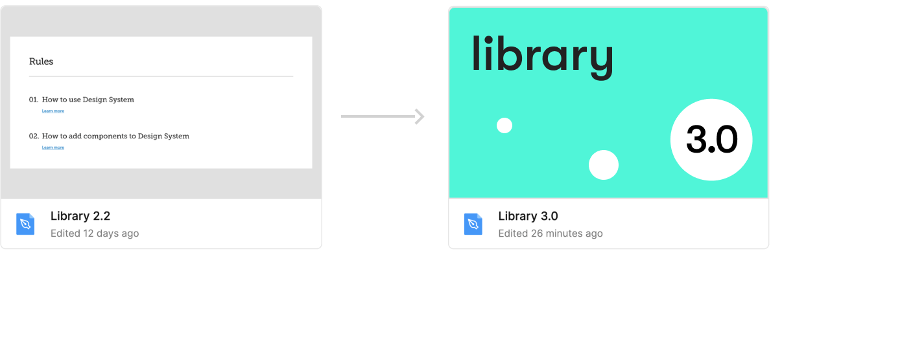

Platform and Design System redesign
Task description
Update the design of the entire platform and design system without structural changes to web pages and flows. Ideally, simplify the front-end development process to the uplift of design components and design tokens in the storybook. Before the redesign of the design system UX research was conducted.Challenges
- At the same time, simplify the structure of the design library in Figma,because the previous one was too large and slow.
- Check components for excessive nesting to speed up the entire project.
- Remove inactive / add new states to design components, because during the uplift some states became irrelevant or were added.
- Keep in mind that the redesign should fit painlessly onto the current platform as part of the uplift.
- Change the structure of the components by breakpoints, because the layout and grid have changed.
- Update some components according to new features in the design library.
Team
There were 3 designers in the team: one lead designer (leading the overall design process on the project) and two designers redesigning the platform and design system.Responsibilities
As part of this case, my tasks included organizing the process of redesigning the design system, aplift the design system, communication with developers, design platform layouts based on new components.The work on the redesign of the platform was structured as follows:

Design System Redesign Steps
According to the draft layout, we determined the sequence of work on the design system:
1. Reworking grids and breakpoints
Reduced number of breakpoints to simplify layout and design

2. Reworking colors
Changed hierarchy and names for easier navigation

3. Reworking font styles
Font styles have been redesigned, hierarchy and titles simplified. Mobile state fonts have been dropped — the chosen font allowed not to change the size of Body, Bold and small headings.
At this point, we started to redesign the platform. We took each new redesigned component iteratively. However, we also refined and supplemented the design tokens as needed.

4. Work on design library components
More than 100 components were redone in the new library, among which were both atoms and complex organisms. A well-chosen font and its size made it possible to drop the mobile states of the components.
Also, more than 200 graphic components were redesigned.

All components were rebuilt with the old architecture in mind — we tried to keep the old structure of web pages to simplify development. We tried to integrate the new design in such a way that after changing the grids, design tokens, and components in the storybook, the page uplift would happen almost «automatically».
Development start
After reworking the main part of the design system and the main pages, the whole scope of work on the uplift was transferred to the front-end team. The development process began: there was a parallel update of the components and design tokens in the storybook and an update of the pages. The design team checked the components and pages after the uplift, advised the developers, and also made some changes from the front-end team during the development process.Final
The platform and design system uplift was completed in ±3 months. We counted on this period at the beginning of the process. Thanks to a well-organized design process, we managed to quickly rework the design system and build more than 100 pages of the platform. Further, the development team was able to release the uplift in ±2 months — this is an excellent result, which was influenced by competent work with the design system and correctly assembled pages that easily fit on the old architecture. The process of testing and finalizing the platform and storybook ended quickly and without serious bugs.

Results
- Thanks to a well-organized design process, we managed to complete the redesign of the design system and platform on time.
- Competent preparation of pages and components helped the developers to make changes without difficulties and release the platform in a short time.
- The design library in Figma has been greatly simplified and cleaned up, it has become faster, navigation in the library has been simplified.
- The number of breakpoints has decreased due to the selection of a more successful grid. This simplifies subsequent design and development.
- Mobile states for components have been eliminated — as a result of well-chosen font sizes and elements, the need for them has disappeared. This simplifies the subsequent design, creation of new components and editing, as well as development (both creating new pages and maintaining the storybook).
Before redesigning the platform and design system, UX research of rebranding was conducted.